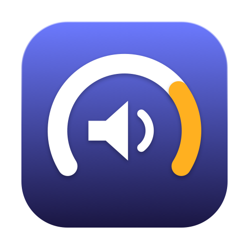

Sube el volumen de macOS más allá del 100% sin instalar drivers, y sin que suene a parlante reventado.
Turn macOS past 100% without installing a driver, and without it sounding like a blown speaker.
macOS 14.2 o posterior · Intel y Apple Silicon · gratis, sin cuenta, sin telemetría macOS 14.2 or later · Intel and Apple Silicon · free, no account, no telemetry
Código abierto (MIT). Todo lo que corre en tu máquina está a la vista: leelo antes de instalarlo. Open source (MIT). Everything that runs on your machine is out in the open: read it before you install it.
Todos los amplificadores de volumen de macOS funcionan igual desde hace una década: instalan un driver de audio, se ponen como salida por defecto del sistema y pasan el audio hacia el hardware real. Driver que firmar, instalador, sudo, tu salida secuestrada, y algo que se rompe en cada actualización.
macOS 14.2 volvió todo eso innecesario. AudioHardwareCreateProcessTap es una API pública que captura lo que otros procesos reproducen, sin driver de por medio.
| Boosters con driver | Audio Booster | |
|---|---|---|
| Instala driver | sí, con sudo | no |
| Toma tu salida por defecto | sí | no |
| Al subir el volumen | ganancia cruda, clipping | limitador con lookahead |
| Desinstalar | sacar el driver | borrar la app |
Every volume booster on macOS has worked the same way for a decade: install an audio driver, make itself the system's default output, and pass audio through to the real hardware. A driver to sign, an installer, sudo, your output device hijacked, and something that breaks with every OS update.
macOS 14.2 made all of that unnecessary. AudioHardwareCreateProcessTap is a public API that captures what other processes are playing, with no driver involved.
| Driver-based boosters | Audio Booster | |
|---|---|---|
| Installs a driver | yes, with sudo | no |
| Takes over default output | yes | no |
| Turning it up | raw gain, clipping | lookahead limiter |
| Uninstall | remove the driver | delete the app |
Multiplicar una señal por tres significa que todo lo que pasaba de un tercio de escala queda con las puntas cortadas, y una onda cortada es ese sonido fino y a lata del «volumen aumentado». Acá:
Desbordar es imposible por construcción, no por haber ajustado constantes hasta que se viera bien.
Multiplying a signal by three means everything above a third of full scale gets its tops shorn off, and sheared waveforms are that thin, tinny "boosted" sound. Here:
Overshoot is impossible by construction, not by tuning constants until it looks fine.
Medida sobre los timestamps del propio callback de audio, no estimada. La cadena cuesta unos dos períodos de buffer más los 3 ms de lookahead.
| Buffer | Latencia agregada |
|---|---|
| 128 frames | 8,8 ms |
| 256 frames (por defecto) | 14,6 ms |
| 512 frames | 26,2 ms |
A la música no le importa en ninguno de los tres. Al video puede que sí, y por eso el default no es el que elige macOS solo.
Measured from the audio callback's own timestamps, not estimated. The chain costs about two buffer periods plus the 3 ms lookahead.
| Buffer | Added latency |
|---|---|
| 128 frames | 8.8 ms |
| 256 frames (default) | 14.6 ms |
| 512 frames | 26.2 ms |
Music will not care at any of these. Video might, which is why the default is not what macOS picks on its own.
Esta app captura todo el audio de tu sistema. Es lo que tiene que hacer para funcionar, pero significa que te está pidiendo un permiso enorme. No deberías dárselo a un binario que no podés leer.
Todo el código está publicado bajo licencia MIT: el motor de audio, el procesamiento, la interfaz, el script que arma la app e incluso el que dibuja el ícono. Podés leer exactamente qué hace con el audio y comprobar que no sale de tu máquina — no hay servidor, no hay cuenta, no hay telemetría, no hay red.
Y si preferís no confiar en el .dmg que yo publiqué, compilalo vos desde el mismo código. Sale idéntico.
This app captures all of your system audio. That is what it has to do in order to work, but it means it is asking you for an enormous permission. You should not grant that to a binary you cannot read.
All of the code is published under the MIT licence: the audio engine, the processing, the interface, the script that assembles the app, even the one that draws the icon. You can read exactly what it does with your audio and confirm that none of it leaves your machine — there is no server, no account, no telemetry, no network.
And if you would rather not trust the .dmg I published, build it yourself from the same source. It comes out identical.
Abrí el .dmg y arrastrá Audio Booster a Aplicaciones.
La app está firmada pero no notarizada: notarizar exige una cuenta de Apple Developer paga. Vas a ver «Apple no pudo verificar que esté libre de malware». Para destrabarla:
Ajustes del Sistema → Privacidad y seguridad, bajá hasta el aviso y tocá Abrir igualmente. O en la Terminal:
xattr -d com.apple.quarantine "/Applications/Audio Booster.app"En macOS 15 el viejo Control-clic → Abrir ya no alcanza.
Si preferís no confiar en un binario sin notarizar —razonable—, compilala vos. No necesita Xcode:
git clone https://github.com/carlostapiaolguin3-stack/audio-booster
cd audio-booster
./build-app.shOpen the .dmg and drag Audio Booster to Applications.
The app is signed but not notarised — notarisation requires a paid Apple Developer account. You will see "Apple could not verify this app is free of malware". To get past it:
System Settings → Privacy & Security, scroll to the notice and click Open Anyway. Or in Terminal:
xattr -d com.apple.quarantine "/Applications/Audio Booster.app"On macOS 15 the old Control-click → Open trick is no longer enough.
If you would rather not trust an un-notarised binary — fair — build it yourself. No Xcode needed:
git clone https://github.com/carlostapiaolguin3-stack/audio-booster
cd audio-booster
./build-app.shAudio Booster es gratis y va a seguir siéndolo. No tiene versión paga, ni cuenta, ni nada guardado para después.
Si te resultó útil y querés colaborar, se agradece — y si no, usala igual, para eso está.
Audio Booster is free and will stay that way. There is no paid tier, no account, nothing held back for later.
If you found it useful and want to chip in, it is appreciated — and if not, use it anyway, that is what it is for.